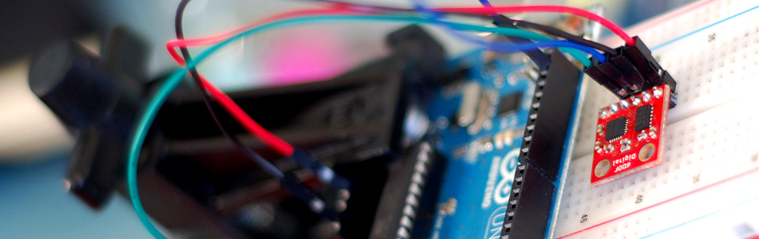

Stable Orientation - Digital IMU 6DOF + Arduino

A while back we wrote an article on sensing orientation with the adxl335 accelerometer. In that article I mentioned all the drawbacks of trying to do this with just an accelerometer, and said that if you needed something stable, what you really needed was an IMU. Well... We are back with an article covering just that, the Digital IMU 6DOF (6 degrees of freedom) breakout board from sparkfun.
An IMU (Inertial Measurement Unit) is a system comprised of an accelerometer and a gyroscope working in tandem to compensate for the pitfalls of each other. This particular board is comprised of the ADXL345 accelerometer (bildr article) and the ITG-3200 gyroscope. Correctly setup, the gyro is able to kick in where an accelerometer leaves off, and vise versa. A gyro is great at measuring rotation, but has no understanding of orientation. And an accelerometer is good at determining orientation, but has no ability to keep track during movement and rotation. But just sticking these together wont give you a clean orientation, we need some hardcore math that will be able to take both the readings, along with previous readings, and make a really good estimate of what is going on. The math for this is known as filtering.
You may have heard of something called a kalman filter. I have searched for years and have never seen a working version for 3axis that could run on the arduino. Sadly, the arduino just dosnt have the power to make it work. Thankfully Kalman isnt the only name in town, and the fusion filter does an excellent job, and is very light mathematically and runs really well on the arduino. The awesome thing about this is that the guys over at varesano did all the hard work in their library for the 9DOF( has 3 axis magnetometer )
Hooking it up
The both components of the Digital IMU 6DOF are I2C devices on a single bus. I2C is a 2-wire serial connection, so we just need to connect the SDA (Data) and SCL (Clock) lines to your Arduino for communication. On your Arduino (everything but the mega) SDA is on analog pin 4, and SCL is on analog pin 5. On an arduino mega, SDA is digital 20, and SCL is digital 21. (The Arduino Leonardo will also be different). Other than these 2 lines, we just need to connect power(3.3v), ground and we are all set.
Note: I noticed that this device is particularly sensitive to so-so wiring, so make sure your connections are solid, or you will see this guy freezing left and right.

Code
Using this part isnt simple from a code point, so we have a library for you, and a big one at that. As I said before the guys over at varesano did all the hard work in their library for the 9DOF( has 3 axis magnetometer ) I just modified for use specifically for this board and made it into a single library so it wouldn't cause any conflicts. Because this is based off of the FreeIMU code, we are keeping their GPL license on it.
To make this code work, before you load the code, or even open the Arduino program, we need to place the "FreeSixIMU" folder into your Arduino Library. If you don’t know where that is by default, Look to the right.
If you click the download button to the right of “Arduino” you can download the whole thing as a zip, so you dont need to copy all the files.
Default Library Folder Location
On your Mac:: In (home directory)/Documents/Arduino/libraries
On your PC:: My Documents -> Arduino -> libraries
On your Linux box:: (home directory)/sketchbook/libraries
Visualizing the orientation with a processing sketch
Sometimes it is hard to see if the output is correct... So we can verify it with a processing sketch (check out the video below). We have included a processing example "freeSixCube" and it has 2 parts. A specialized arduino firmware that must be loaded first, and a processing sketch. You need to configure the sketch to use the correct serial port.
If you are having issues with processing sketch missing a font, let me know, I did my best to not require any font files.
When you launch the processing sketch, (make sure to hold it very still for the first 2 seconds) it should draw up a cube, and after a second it will move to mimic your movement of the 6DOF board. You can hit "h" to reset the orientation to level so you can get it to what you consider level, hit "h" and it should look just like how you hold it from there on out.
You will see it drifting (moving onscreen without you moving the sensor) quite a bit at first, but hold it still and it will smooth out. But even then, the yaw will still be drifting a bit. To understand why, read on.
Drifting Yaw
Yaw is name for rotation around an axis that is similar to spinning a top, or shaking your head “no.” Accelerometers can’t measure this type of motion, but gyros can. Unfortunately gyros have no sense of direction, and also drift. So your yaw measurements from this will be without a sense of direction, and will drift over time. How much? Maybe a few degrees a second, maybe less, it's hard to say because this library does a good job if suppressing it, but it's not perfect.
In the first second after the Arduino resets (due to code upload, serial connection, etc), the firmware will try to reduce the drift from the gyroscope. So Make sure to keep the IMU steady during that startup time for best results.
If you need direction, and no drift in your yaw you need to get your self an AHRS, that's an IMU with a magnetometer on it. Like this guy here.
Video
Article taken from bildr.org with minor changes - I am the original author of this content